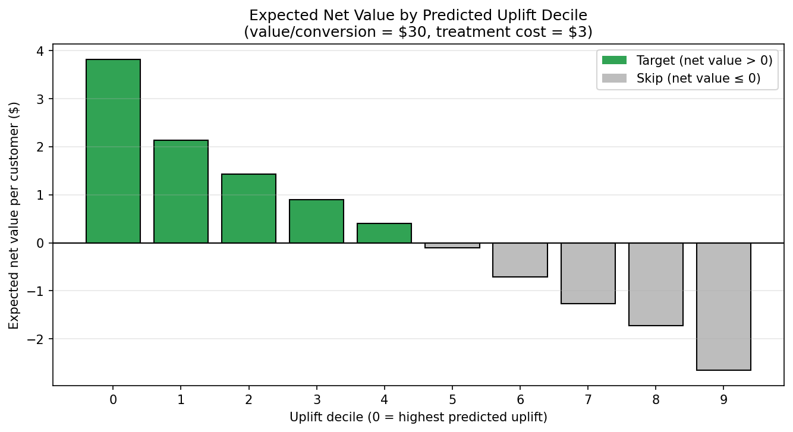

3.6 Uplift Modeling for Targeting
Which customers should get the next campaign? Most teams answer with a response model: rank customers by their likelihood to buy and target the top of that list. The problem is that many high-probability customers will convert whether you contact them or not, so spending on them does not move the needle. Uplift modeling ranks customers instead by how much contacting them is expected to change their behavior: it targets the ones who buy because you contacted them, not the ones who would have bought anyway. That is what makes it valuable whenever contact has a cost: the budget should go where it changes an outcome, not where it rides along with a sale that was already coming.
- A response model predicts: \(P(\text{purchase})\)
- An uplift model predicts: \(P(\text{purchase} \mid \text{treated}) - P(\text{purchase} \mid \text{not treated})\)
This second quantity is the per-customer treatment effect, the CATE; §3.5 covered how to estimate it. That score is just the measurement step. The next step is to turn it into a targeting policy, and to check on held-out data whether acting on the ranking actually delivers value.

Understanding the Customers to Target
To apply uplift modeling well, it helps to picture four kinds of customer, defined by how they respond to being contacted.

- Persuadables: buy only if contacted. These are the ideal targets; the email changes their behavior, and your whole return comes from them.
- Sure Things: buy either way. Contacting them spends budget for no incremental sale.
- Lost Causes: never buy. Contact is wasted.
- Sleeping Dogs: would buy on their own, but contact pushes them away. Reaching them actively costs you.
A response model, chasing likelihood to buy, fills its list with Sure Things. An uplift model, chasing the treatment effect, aims for Persuadables and steers clear of the rest. That difference is the whole point.
Uplift has two method families: the meta-learners from §3.5, and decision trees built to split on uplift directly, whose advantage is handling several treatment arms at once (compare 5%, 10%, and 20% offers in one model). This chapter stays on the meta-learner route, using EconML as in §3.5 plus scikit-uplift to evaluate the ranking; CausalML, Uber’s library, is the established home of the tree-based methods.
The Dataset
We reuse the semi-synthetic MineThatData example from §3.5: Kevin Hillstrom’s randomized email experiment, restricted to the men’s email and no-email arms (42,613 customers, split roughly 50/50). The customer features and the treatment assignment are real; only the outcome is simulated, so we know each customer’s true effect and can grade the model at every step. The average effect we built in is about 11 percentage points, larger for men’s buyers, recently active customers, and multichannel shoppers.
from msbook.data import load_minethatdata
df = load_minethatdata()
df = df[df['segment'].isin(['Mens E-Mail', 'No E-Mail'])].copy()
df['treatment'] = (df['segment'] == 'Mens E-Mail').astype(int)Each row is one customer: the real Hillstrom features, the randomized treatment flag, and the simulated conversion outcome we grade against.
| Column | Meaning |
|---|---|
| recency | months since last purchase |
| history | prior 12-month spend ($) |
| mens | bought men’s merchandise (0/1) |
| channel | Phone / Web / Multichannel |
| treatment | 1 = Men’s email, 0 = control |
| conversion | purchased after the campaign (0/1) |
Companion notebook: sec3.6_uplift_modeling.ipynb builds the S-Learner uplift score on MineThatData and evaluates it with uplift and Qini curves, decile uplift, and a net-value targeting policy.
View on GitHub
Training the Uplift Model
The uplift score is just the CATE. We re-fit the §3.5 meta-learners and keep the one that best recovers the true effect on the holdout set: the S-Learner, whose estimates correlate 0.77 with the truth (the full comparison is Table 1 in §3.5). Its predicted CATE is the uplift score, and the fit is the same EconML call as in §3.5, so there is nothing new to install:
from econml.metalearners import SLearner
from lightgbm import LGBMRegressor
uplift = SLearner(overall_model=LGBMRegressor())
uplift.fit(Y=conversion_train, T=treatment_train, X=X_train)
uplift_score = uplift.effect(X_eval) # one CATE / uplift score per customerEvaluation
The uplift score is useful only if customers with higher scores really do produce more incremental conversions than customers with lower scores. The first check is local: split the held-out customers into deciles by uplift score (decile 0 = highest score) and read the uplift within each. The semi-synthetic setup lets us compare three columns: the model’s predicted uplift, the observed uplift on the randomized holdout (the difference in conversion rates between treated and control within each decile), and the true uplift.
| Decile | Predicted uplift | Observed uplift | True uplift |
|---|---|---|---|
| 0 (highest score) | 22.7% | 16.8% | 18.0% |
| 4 (middle) | 11.4% | 10.8% | 13.4% |
| 9 (lowest score) | 1.2% | 3.3% | 5.1% |

The exact rows are noisy, especially the observed uplift column, because each decile holds only about 1,300 customers. But the ranking works: the top decile shows far higher observed and true uplift (about 17 points, against an 11-point average) than the bottom decile. That ordering is what we need. We do not need every decile to be perfectly monotonic; focus on the top of the ranking, not the individual rows in the tail.
The decile table is a local view. The global diagnostic is the Qini curve: rank customers from highest to lowest uplift and plot the cumulative incremental conversions, treatment-normalized, as you target deeper into the list. A ranking with real signal curves above the diagonal you would see from contacting customers at random. (The plain uplift curve shows the same shape on an un-normalized scale; the Qini curve is the standard for comparing uplift models because it stays reliable when the treated share varies across the ranking.)

Here the curve stays well above the random line from the start: targeting the top 30% of the ranking captures about 42% of the incremental conversions (versus 30% under random targeting), and the top half captures about 62%. That is what makes the ranking worth acting on.
Both summary areas are positive, which formally means the ranking outperforms random targeting:
from sklift.metrics import uplift_auc_score, qini_auc_score
auuc = uplift_auc_score(conversion_eval, uplift_score, treatment_eval)
qini = qini_auc_score(conversion_eval, uplift_score, treatment_eval)
print(f"AUUC = {auuc:.4f} Qini = {qini:.4f}") # both > 0 ⇒ better than randomAUUC = 0.0404 Qini = 0.0695These collapse the whole curve into a single number. The Qini coefficient is the one to quote when comparing uplift models: it is positive when the ranking beats random, and comparable across models on the same holdout set, though not an absolute business metric. AUUC measures the same idea on the uplift curve. One caveat on both: the S-Learner was chosen on this same holdout, so these figures are optimistic. A production report keeps an untouched final holdout for the headline numbers.
Extracting the Target List
A score becomes actionable only when you connect it to business metrics. Say each incremental conversion is worth $30 in margin and contacting a customer costs $3. Then you should treat only customers whose uplift clears the 10% break-even, and the expected net value for each customer is their uplift times the conversion value, minus the contact cost:
value_per_conversion = 30.0 # $ margin per incremental conversion
treatment_cost = 3.0 # $ per contacted customer (email + offer)
net_value = uplift_score * value_per_conversion - treatment_cost
# Target the deciles (or customers) where net value > 0.
| Decile | Predicted uplift | Net value per customer | Decision |
|---|---|---|---|
| 3 | 13.0% | $0.90 | Target |
| 4 | 11.4% | $0.41 | Target |
| 5 | 9.7% | -$0.10 | Skip |
| 6 | 7.6% | -$0.71 | Skip |
With a $30 margin per incremental conversion and a $3 contact cost, the break-even uplift is 10%. The first five deciles clear that threshold on predicted uplift, so the policy is to target the top half of the list and skip the rest. The specific constants are just for illustration; the rule is what matters: convert uplift into expected value, subtract the contact cost, and target only where the result is positive. That becomes your customer list. In this run the predicted and observed columns do not quite agree: observed net value stays positive for two deciles past the predicted cutoff. That borderline zone is exactly where a fresh randomized holdout earns its keep before you commit budget.
Key Takeaways
- Uplift ranks customers by how much contact changes their behavior, not by how likely they are to buy. That is what keeps budget off the Sure Things and away from the Sleeping Dogs.
- Confirm the ranking beats random on a fresh randomized holdout, then convert uplift into expected net value: target only where uplift times conversion value clears the contact cost.